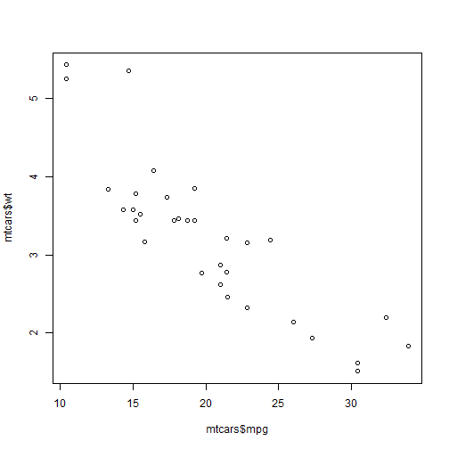

The published Shiny App allows the user to manipulate a coordinate upon which the line sits and the slope of the line, with feedback for \(R^2\) value (a measure of fit).
Try the app at: https://krocco.shinyapps.io/DataProducts/
Peter Michael Crocco
Coursera Data Products
Try the app at: https://krocco.shinyapps.io/DataProducts/
mtcars data is loaded and plotted as follows, showing the distribution of vehicle weight vs. miles per gallon:
data(mtcars)
plot(mtcars$mpg, mtcars$wt)

It appears that the data is reasonably linear, so we can manipulate a linear regression line.
The App takes input for X, Y, and slope. Then, using the equation for a line, the Y intercept is calculated to fully define the line in the form: y = mx + b
X <<- 20
Y <<- 3.2
slope <<- -0.14
intercept <<- Y - slope*X
print(paste('y = ', slope, '* x + ', intercept))
## [1] "y = -0.14 * x + 6"
The line can be plotted over the data.
Once the guessed line is defined, R2 is calculated and displayed for the user.
Rsquared = 1 - sum((mtcars$wt - (slope * mtcars$mpg + intercept))^2)/sum((mtcars$wt - Y)^2)
print(paste('RSquared: ', round(Rsquared, 2)))
## [1] "RSquared: 0.75"